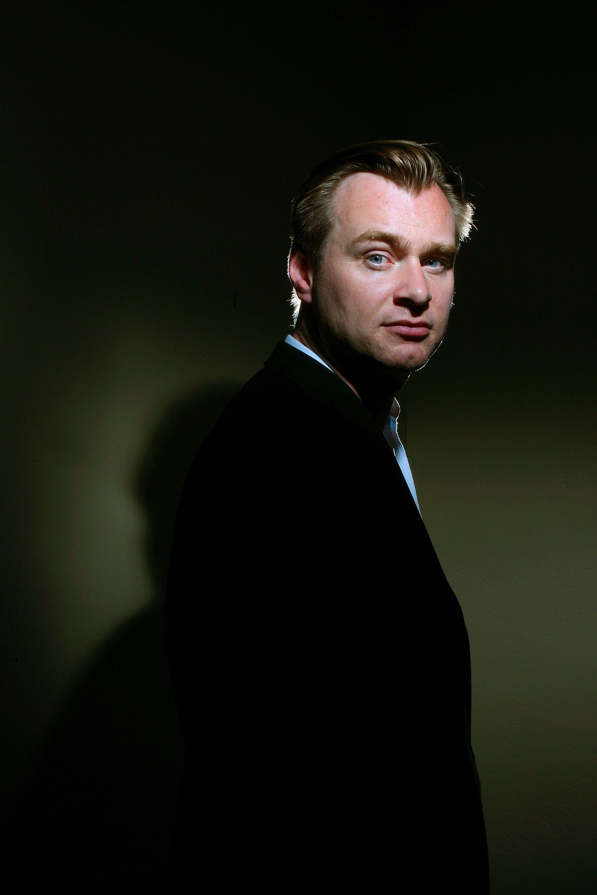
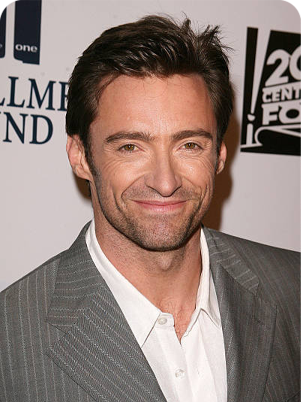
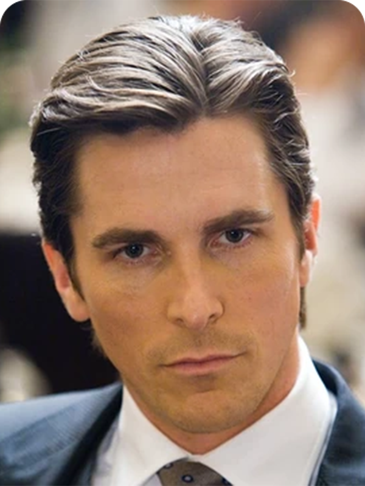
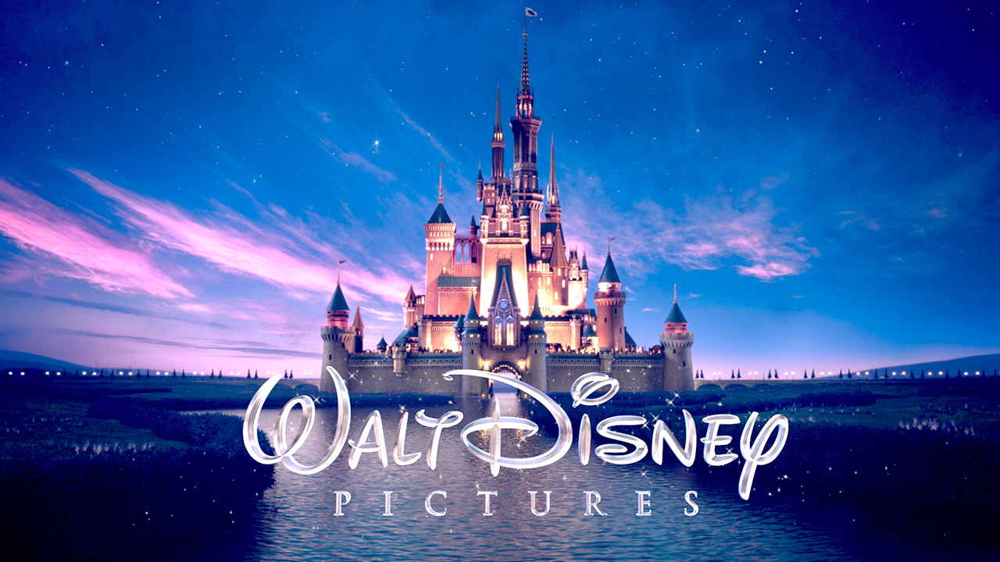
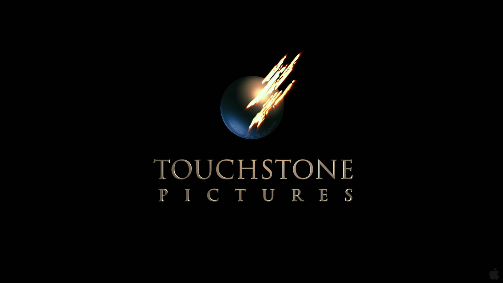
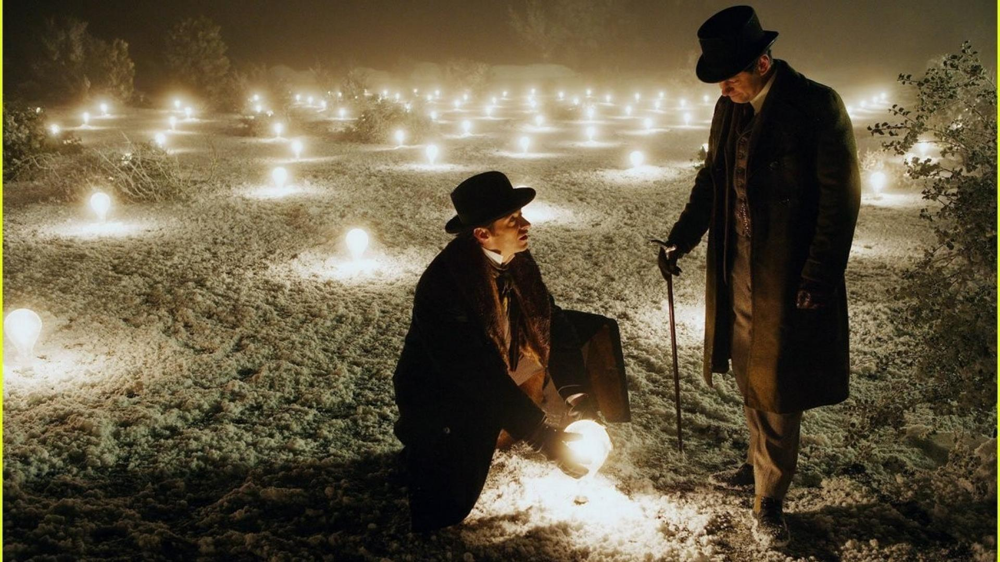
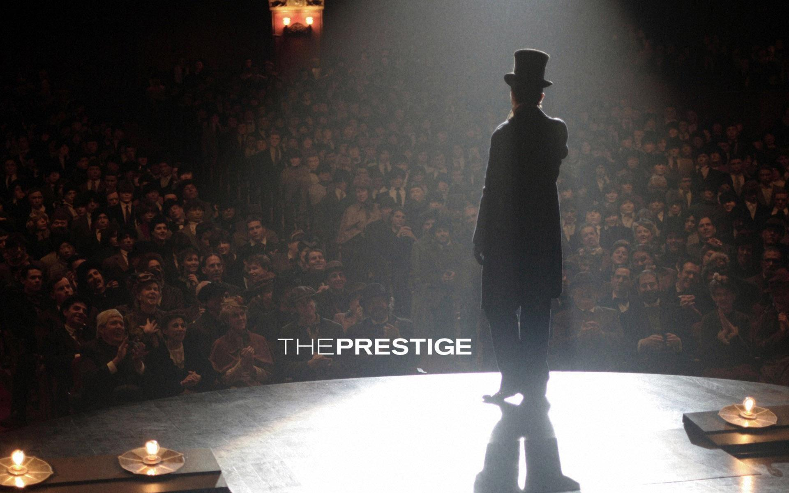

 Christopher Nolan is a highly acclaimed British-American filmmaker, renowned for his exceptional talent in storytelling and visionary approach to cinema. Born on July 30, 1970, Nolan first gained widespread recognition with his breakthrough film "Memento" in 2000, which showcased his penchant for intricate narratives and non-linear storytelling. Since then, he has consistently mesmerized audiences with films like "The Dark Knight" trilogy, "Inception," "Interstellar," and "Dunkirk." Known for his distinct visual style, intellectual themes, and masterful use of practical effects, Nolan has earned numerous accolades, including multiple Academy Award nominations. With a penchant for exploring the human psyche and blurring the lines between reality and illusion, Christopher Nolan remains a true icon in the world of filmmaking, leaving an indelible mark on the industry.
. , "The Prestige" is a mesmerizing psychological thriller that weaves a tale of obsession, rivalry, and illusion. Set in Victorian-era London, the film follows the intense rivalry between two magicians, Robert Angier played by
Hugh Jackman
 Hugh Jackman is a versatile and talented Australian actor, singer, and producer, known for his exceptional performances on both stage and screen. Born on October 12, 1968, in Sydney, he initially gained recognition for his portrayal of Wolverine in the "X-Men" film series, a role that would become synonymous with his name. Jackman's portrayal of the iconic Marvel character won him widespread acclaim and a massive fan following. Beyond his superhero persona, he has showcased his range as an actor in various genres, from musicals like "Les Misérables," for which he received an Academy Award nomination, to dramatic films like "The Prestige" and "Prisoners." Moreover, Jackman's talent extends to the stage, where he has achieved great success in musical theater, notably in the role of Jean Valjean in the stage adaptation of "Les Misérables." With his charisma, versatility, and commitment to his craft, Hugh Jackman continues to be a beloved figure in the entertainment industry, leaving an indelible mark on both Hollywood and Broadway.
, and Alfred Borden played by
Christian Bale
 Christian Bale is a highly accomplished British actor known for his incredible dedication to his roles and transformative performances. Born on January 30, 1974, in Wales, Bale began his acting career at a young age and quickly garnered attention for his exceptional talent. He gained international fame and acclaim for his portrayal of Bruce Wayne/Batman in Christopher Nolan's "The Dark Knight Trilogy," a role that showcased his ability to bring depth and complexity to iconic characters. Bale's commitment to his craft is evident in his physical transformations for various roles, such as in "The Machinist" and "Vice," where he drastically altered his weight to embody the characters convincingly. Beyond his work in superhero films, Bale has delivered powerful performances in movies like "American Psycho," "The Fighter," and "Ford v Ferrari." With numerous accolades, including an Academy Award for Best Supporting Actor, Christian Bale continues to be recognized as one of the most talented and respected actors of his generation.
, whose fierce competition pushes them to extreme lengths to outwit each other and reveal the secrets behind their magic tricks. As the story unfolds, the film delves into complex themes of sacrifice, deception, and the cost of achieving greatness. With its intricate storytelling, brilliant performances, and unexpected twists, "The Prestige" keeps audiences on the edge of their seats, blurring the line between reality and illusion until its final enigmatic revelation. The film's exploration of the nature of magic and the human desire for both fame and perfection leaves a lasting impact, making "The Prestige" a captivating and unforgettable cinematic experience
Directed by -
Christopher Nolan
Christopher Edward Nolan CBE (born 30 July 1970) is a British and American filmmaker. Known for his Hollywood blockbusters with complex storytelling, Nolan is considered a leading filmmaker of the 21st century. His films have grossed $5 billion worldwide. The recipient of many accolades, he has been nominated for five Academy Awards, five BAFTA Awards and six Golden Globe Awards. In 2015, he was listed as one of the 100 most influential people in the world by Time, and in 2019, he was appointed Commander of the Order of the British Empire for his contributions to film..
Produced by -
Christopher Nolan
Christopher Edward Nolan CBE (born 30 July 1970) is a British and American filmmaker. Known for his Hollywood blockbusters with complex storytelling, Nolan is considered a leading filmmaker of the 21st century. His films have grossed $5 billion worldwide. The recipient of many accolades, he has been nominated for five Academy Awards, five BAFTA Awards and six Golden Globe Awards. In 2015, he was listed as one of the 100 most influential people in the world by Time, and in 2019, he was appointed Commander of the Order of the British Empire for his contributions to film..
,
Jonathan Nolan
Jonathan Nolan is a highly talented American screenwriter, producer, and director known for his significant contributions to the world of television and film. Born on June 6, 1976, in London, England, he is the younger brother of renowned filmmaker Christopher Nolan. Jonathan's writing prowess is evident in his collaborations with his brother, notably co-writing screenplays for films like "The Prestige," "The Dark Knight," and "The Dark Knight Rises." However, it is in television that Jonathan has made a significant impact. He created and developed the critically acclaimed science fiction drama series "Person of Interest" and co-created the mind-bending, award-winning series "Westworld." Known for his intricate storytelling, thought-provoking themes, and complex character arcs, Jonathan Nolan continues to be praised for his remarkable ability to craft compelling narratives that challenge and captivate audiences. With his impressive body of work and a deep passion for storytelling, he remains a prominent figure in the entertainment industry, inspiring and engaging viewers with each new project he takes on.
Distributed by -
Warner Bros. Pictures
Warner Bros. is a renowned and influential entertainment company with a storied history in the entertainment industry. Founded on April 4, 1923, by Harry, Albert, Sam, and Jack Warner, the studio has grown into a major player in film, television, and media. Over the years, Warner Bros. has produced a vast array of iconic movies, TV shows, and animated features, contributing to the cultural landscape of cinema. With a diverse catalog of beloved franchises like "Harry Potter," "The Dark Knight Trilogy," and the DC Extended Universe (DCEU), the studio continues to captivate global audiences with its blockbuster hits. Beyond film and television, Warner Bros. also encompasses divisions in video games, consumer products, and digital content, maintaining its position as a powerhouse in the entertainment world.
,
Walt Disney Studios Motion Pictures
 Walt Disney Studios Motion Pictures, commonly known as Disney, is one of the most renowned and influential film distribution companies in the world. As a subsidiary of The Walt Disney Company, the studio is responsible for the distribution and marketing of films produced by various Disney-owned production companies, including Walt Disney Pictures, Pixar, Marvel Studios, Lucasfilm, and 20th Century Studios, among others.Disney has a rich history dating back to its founding in 1923 by Walt Disney and Roy O. Disney. Over the years, the studio has produced and distributed countless iconic and beloved films that have left a lasting impact on popular culture. From timeless classics like "Snow White and the Seven Dwarfs" and "Cinderella" to modern blockbusters like "The Lion King" (1994), "Frozen" (2013), and the Marvel Cinematic Universe, Disney has consistently delivered high-quality entertainment for audiences of all ages.
,
Touchstone Pictures
 Touchstone Pictures is a film distribution label that operates under The Walt Disney Studios. Established in 1984, Touchstone Pictures was created to release films that were intended for a more mature audience, as they might not fit the family-friendly brand of Walt Disney Pictures. The label was named after Touchstone Films, a company founded by Disney in the 1970s to produce and distribute films beyond the scope of its main brand.Throughout its history, Touchstone Pictures has released a wide variety of films, including romantic comedies, dramas, thrillers, and action-adventures. Some of its notable releases include "Splash," "Good Morning, Vietnam," "Dead Poets Society," "Pretty Woman," "The Nightmare Before Christmas," and "Armageddon.""
From the opening scene, "The Prestige" mesmerizes audiences with its hauntingly atmospheric visuals and intricate storytelling. The narrative unfolds through a series of interwoven timelines and perspectives, making it akin to a magic trick itself. As the story progresses, the audience is drawn deeper into the minds of Angier and Borden, exploring the psychological toll of their ruthless competitionHugh Jackman and Christian Bale deliver tour de force performances, capturing the essence of their characters with depth and nuance. Jackman portrays Angier's desperate desire for recognition and revenge, while Bale embodies Borden's unyielding dedication to his art, even at the cost of personal relationships.
At the heart of the film lies the central theme of sacrifice. As the magicians employ increasingly dangerous and ethically questionable methods to outdo each other, "The Prestige" raises profound questions about the nature of obsession and the price of success. The film explores the lengths to which individuals are willing to go to achieve greatness, blurring the lines between hero and villain, as both Angier and Borden become increasingly consumed by their rivalry.In addition to its engrossing narrative, "The Prestige" boasts a stellar supporting cast, including Michael Caine as Cutter, the ingenuous engineer and confidant to both magicians, and Scarlett Johansson as Olivia, the assistant caught between their competing ambitions. The ensemble's performances add layers of complexity to the film's themes and relationships, heightening the intrigue and suspense.
Visually stunning and artfully shot, "The Prestige" immerses viewers in the world of Victorian-era magic. The film's attention to detail and period authenticity create a rich and evocative backdrop for the characters' emotional and psychological struggles. The art of deception, both on and off the stage, is masterfully depicted, further blurring the lines between reality and illusion.
As "The Prestige" reaches its enigmatic and unexpected climax, the film leaves audiences contemplating its multiple layers of intrigue long after the credits roll. The ultimate revelation challenges viewers to reassess everything they have witnessed, making the film a deeply satisfying and intellectually stimulating experience
● Beauty of The Prestige

(Tesla's invention is a large-scale electrical machine designed to create an extraordinary and powerful electrical field. It can serve various purposes, including wireless electricity transmission and potentially even manipulating reality itself.)

(One of the key stage scenes in the film is when Angier performs his version of "The Transported Man," a seemingly impossible magic trick. In this act, Angier enters a door on one side of the stage, and within seconds, he appears instantly at another door on the opposite side of the stage. )
In conclusion, "The Prestige" stands as a remarkable achievement in storytelling, showcasing Christopher Nolan's prowess as a filmmaker and storyteller. With its compelling performances, thematic depth, and innovative narrative structure, the film invites audiences on an enthralling journey through the world of magic and human obsession. By exploring the sacrifices individuals make in their pursuit of greatness, "The Prestige" leaves an indelible mark, making it a cinematic gem that continues to captivate and mystify audiences worldwide.